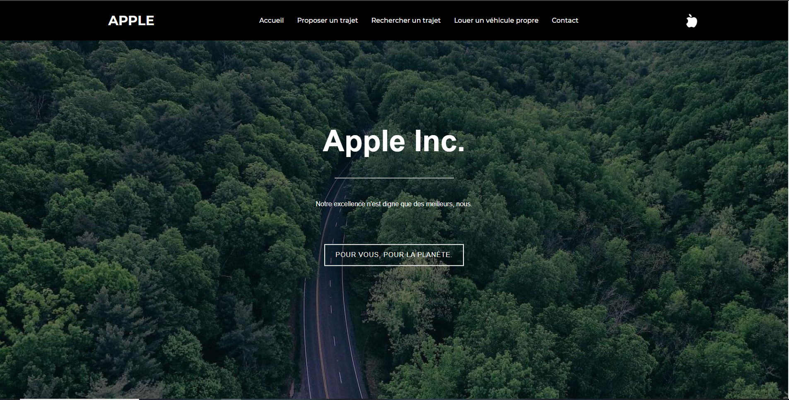

Projets
Projets Scolaires
S1.04-2.04-Introduction aux bases de données et exploitation de bases de données.
S1.03-2.03-Installation d'un poste de services réseaux et de machines virtuelles.
S1.02-Comparaison d'algorithmes et Création d'un jeu ludo pédagogique.
S1.05-1.06-Plateforme en ligne.

Projet Agile